反击爬虫，前端工程师的脑洞可以有多大？
前言
对于一张网页，我们往往希望它是结构良好，内容清晰的，这样搜索引擎才能准确地认知它。
而反过来，又有一些情景，我们不希望内容能被轻易获取，比方说电商网站的交易额，教育网站的题目等。因为这些内容，往往是一个产品的生命线，必须做到有效地保护。这就是爬虫与反爬虫这一话题的由来。
常见反爬虫策略
但是世界上没有一个网站，能做到完美地反爬虫。
如果页面希望能在用户面前正常展示，同时又不给爬虫机会，就必须要做到识别真人与机器人。因此工程师们做了各种尝试，这些策略大多采用于后端，也是目前比较常规单有效的手段，比如：
- User-Agent + Referer检测
- 账号及Cookie验证
- 验证码
- IP限制频次
而爬虫是可以无限逼近于真人的，比如：
- chrome headless或phantomjs来模拟浏览器环境
- tesseract识别验证码
- 代理IP淘宝就能买到
所以我们说，100%的反爬虫策略？不存在的。
更多的是体力活，是个难易程度的问题。
不过作为前端工程师，我们可以增加一下游戏难度，设计出一些很(sang)有(xin)意(bing)思(kuang)的反爬虫策略。
前端与反爬虫
前端与反爬虫
例子：猫眼电影
猫眼电影里，对于票房数据，展示的并不是纯粹的数字。
页面使用了font-face定义了字符集，并通过unicode去映射展示。也就是说，除去图像识别，必须同时爬取字符集，才能识别出数字。

并且，每次刷新页面，字符集的url都是有变化的，无疑更大难度地增加了爬取成本。
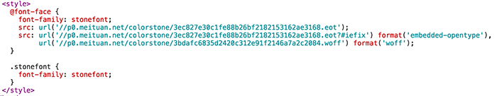
BACKGROUND拼凑式
例子：美团
与font的策略类似，美团里用到的是background拼凑。数字其实是图片，根据不同的background偏移，显示出不同的字符。
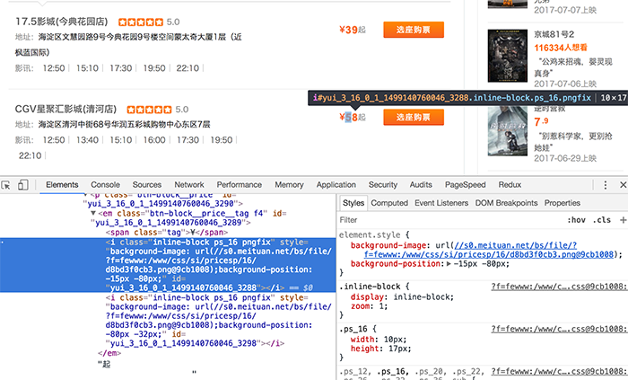
并且不同页面，图片的字符排序也是有区别的。不过理论上只需生成0-9与小数点，为何有重复字符就不是很懂。
页面A：
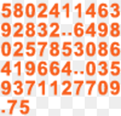
页面B：
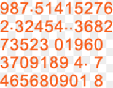
字符穿插式
例子：微信公众号文章
某些微信公众号的文章里，穿插了各种迷之字符，并且通过样式把这些字符隐藏掉。
这种方式虽然令人震惊…但其实没有太大的识别与过滤难度，甚至可以做得更好，不过也算是一种脑洞吧。
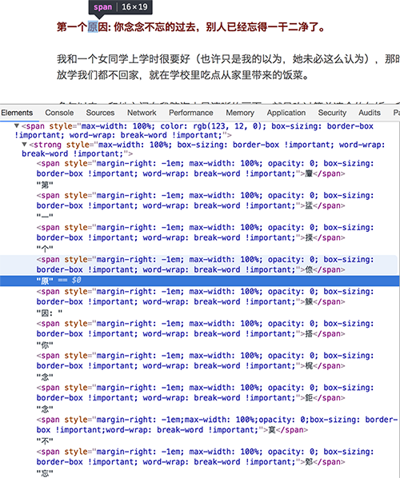
对了，我的手机流量可以找谁报销吗？
伪元素隐藏式
例子：汽车之家
汽车之家里，把关键的厂商信息，做到了伪元素的content里。
这也是一种思路：爬取网页，必须得解析css，需要拿到伪元素的content，这就提升了爬虫的难度。
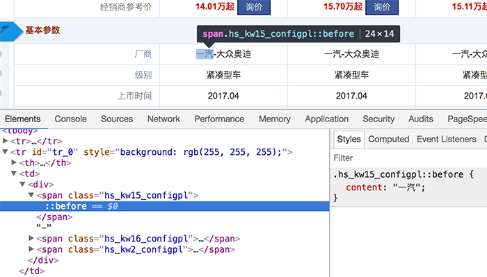
元素定位覆盖式
例子：去哪儿
还有热爱数学的去哪儿，对于一个4位数字的机票价格，先用四个i标签渲染，再用两个b标签去绝对定位偏移量，覆盖故意展示错误的i标签，最后在视觉上形成正确的价格…
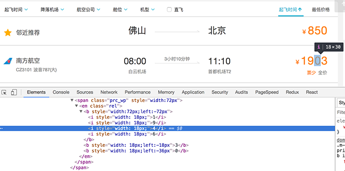
这说明爬虫会解析css还不行，还得会做数学题。
IFRAME异步加载式
网易云音乐页面一打开，html源码里几乎只有一个iframe，并且它的src是空白的：about:blank。接着js开始运行，把整个页面的框架异步塞到了iframe里面…
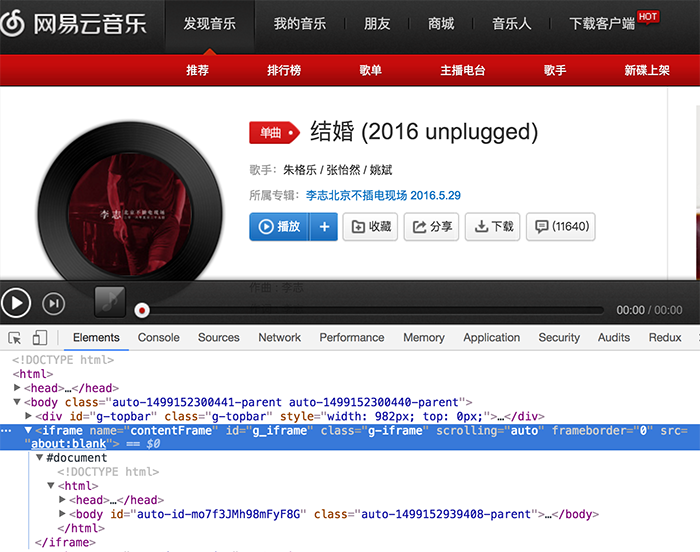
不过这个方式带来的难度并不大，只是在异步与iframe处理上绕了个弯（或者有其他原因，不完全是基于反爬虫考虑），无论你是用selenium还是phantom，都有API可以拿到iframe里面的content信息。
字符分割式
例子：全网代理IP
在一些展示代理IP信息的页面，对于IP的保护也是大费周折。
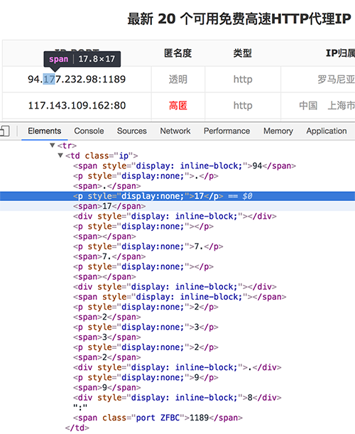
他们会先把IP的数字与符号分割成dom节点，再在中间插入迷惑人的数字，如果爬虫不知道这个策略，还会以为自己成功拿到了数值；不过如果爬虫注意到，就很好解决了。
字符集替换式
例子：去哪儿移动侧
同样会欺骗爬虫的还有去哪儿的移动版
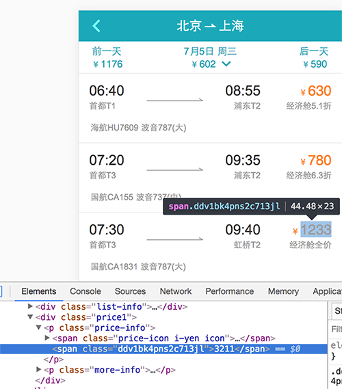
html里明明写的3211，视觉上展示的却是1233。原来他们重新定义了字符集，3与1的顺序刚好调换得来的结果…
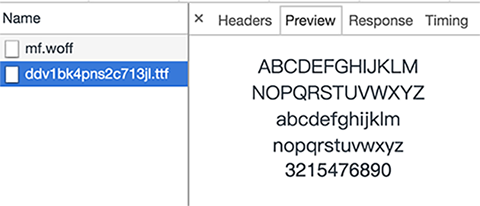